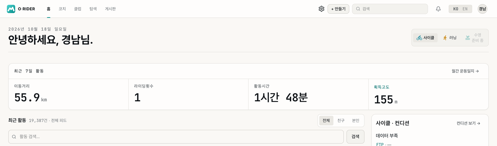
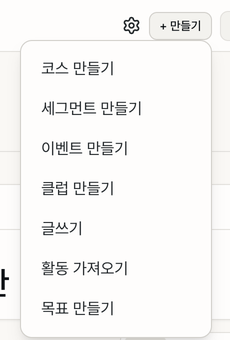
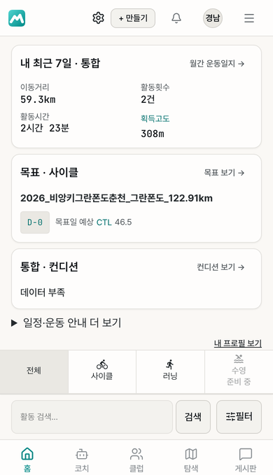

1. 시작하기
이 장에서 할 수 있는 것
- 앱과 같은 계정으로 웹에 로그인합니다.
- 위쪽 메뉴 5개(홈 · 코치 · 클럽 · 탐색 · 게시판)와 오른쪽 위 버튼이 어디로 가는지 익힙니다.
- 종목 칩(사이클 · 러닝 · 수영)으로 보고 싶은 종목을 고르고, 처음 해 둘 설정을 마칩니다.
1.1 앱은 기록하고, 웹은 되짚어 봅니다
오라이더 앱과 웹은 같은 계정의 같은 데이터를 씁니다. 쓰는 때와 목적이 다릅니다.
| 앱 (휴대폰·워치) | 웹 (orider.co.kr) | |
|---|---|---|
| 언제 | 라이딩·러닝을 하는 동안 | 운동을 마친 뒤 |
| 하는 일 | 기록 시작·일시정지·종료, 센서 연결 | 기록 확인, 분석, 컨디션·계획 관리, 클럽·이벤트 |
| 궁금한 것 | "지금 속도·페이스가 얼마지?" | "이번 주에 얼마나 했고, 내일은 무엇을 할까?" |
기록 시작·종료는 앱에서만 합니다. 앱 사용법은 앱 설명서를 보세요.
1.2 로그인하기
따라 하기
- 브라우저에서 orider.co.kr을 엽니다.
- 오른쪽 위 Google 로그인을 누릅니다.
- 앱에서 쓰는 것과 같은 Google 계정을 고릅니다.
- 로그인되면 오른쪽 위에 내 이름(아바타)이 나타나고, 홈에 "안녕하세요, ○○님."과 내 최근 7일 기록이 보입니다.
iPhone에서는 Apple로 로그인도 고를 수 있습니다. 다만 웹(orider.co.kr)은 Google 계정 로그인만 지원하므로, 웹에서도 기록을 보려면 Google로 로그인하세요. 로그인하지 않고(게스트로) 쓴 기록은 웹에서 볼 수 없습니다.
다른 Google 계정으로 들어가면 기록이 하나도 없는 빈 화면이 나옵니다. 기록이 안 보이면 먼저 오른쪽 위 아바타의 계정을 확인하세요.
로그인하지 않아도 공개 활동·코스·게시판 같은 일부 화면은 볼 수 있습니다. 내 기록, 코치, 설정은 로그인해야 열립니다.
1.3 화면 구성 — 메뉴 5개와 오른쪽 위 버튼


위쪽 메뉴 (PC)
| 메뉴 | 여기서 하는 일 | 설명서 |
|---|---|---|
| 홈 | 최근 7일 요약, 최근 활동 피드, 컨디션·주간 이동거리·목표 카드 | 2장 |
| 코치 | 컨디션 · 오늘 운동 · 계획 · 목표 · 분석 · 대화 (탭 6개) | 6장, 7장 |
| 클럽 | 내가 속한 클럽, 클럽 찾기·만들기, 초대 코드로 가입 | 5장 |
| 탐색 | 코스 · 세그먼트 · 이벤트 · 챌린지 · 기록 활용 | 4장, 5.5 |
| 게시판 | 자유로운 글, 작업일지, 문의/신고 | 4.7 |
오른쪽 위 버튼
| 버튼 | 하는 일 |
|---|---|
| 톱니바퀴(설정) | 설정 화면을 엽니다. 계정 · 기기 · 연결 앱 · 개발자 · 표시 · 내 데이터 (10장) |
| + 만들기 | 코스 만들기, 세그먼트 만들기, 이벤트 만들기, 클럽 만들기, 글쓰기, 활동 가져오기, 목표 만들기로 바로 갑니다. |
| 검색 | 입력하는 동안 활동(설명·이름)과 코스(이름·지역)를 3개씩 미리 보여 줍니다. Enter를 누르면 탐색 > 코스의 검색 결과로 갑니다. |
| 종(알림) | 새 알림을 확인합니다. |
| KO / EN | 화면 언어를 한국어·영어로 바꿉니다. |
| 아바타(내 이름) | 내 프로필 · 운동일지 · 기록 · 친구 · 장비 · 로그아웃 |
옛 설명서나 다른 글에서 본 메뉴 이름이 화면에 없다면 아래 표로 찾으세요. 옛 주소로 들어가도 새 화면으로 자동으로 옮겨 갑니다.
앱 하단 탭과 웹 메뉴는 이렇게 대응합니다: 앱 피트니스 = 웹 코치 > 컨디션, 앱 계획 = 웹 코치 > 계획(목표는 웹 코치 > 목표).
| 옛 이름 | 지금 위치 |
|---|---|
| 대시보드 | 홈 |
| 피트니스 | 코치 > 컨디션 (깊은 차트는 코치 > 분석) |
| 운동 계획 | 코치 > 계획 · 코치 > 목표 |
| 운동 기록 | 아바타 메뉴 > 운동일지 |
| 리더보드 | 탐색 > 세그먼트 (클럽 순위는 클럽 > 함께한 이번 주) |
| 그룹 | 클럽 |
| 커뮤니티 | 게시판 |
| 설정 > 운동 프로필 | 코치 > 컨디션 > 전체 종목 훈련 기준 설정 |
| 설정 > 앱 & 데이터 | 설정 > 표시 · 설정 > 내 데이터 |
1.4 종목 칩 — 사이클 · 러닝 · 수영
홈과 코치 화면 오른쪽 위에는 사이클 · 러닝 · 수영 칩이 있습니다. 칩을 누르면 그 종목 기준으로 숫자와 카드가 바뀝니다. 코치 > 컨디션과 코치 > 분석에는 세 종목을 합쳐 보는 통합 칩이 하나 더 있습니다.
- 사이클 — 거리·속도·파워(W) 기준으로 봅니다.
- 러닝 — 거리·페이스(분/km) 기준으로 봅니다.
- 수영 — 홈·코치에서는 흐리게 "준비 중"으로 표시되어 아직 고를 수 없습니다.
숫자가 이상하게 적거나 비어 있으면 먼저 어떤 칩이 선택돼 있는지 보세요. 사이클 칩에서는 러닝 기록이 합계에 들어가지 않습니다.
1.5 처음 해 둘 설정
처음 로그인하면 3단계 안내 화면이 나옵니다. 위쪽 진행 표시("3단계 중 1단계")로 어디까지 왔는지 알 수 있습니다.
| 단계 | 화면 | 건너뛰기 |
|---|---|---|
| ① | 주 종목을 선택하세요 — 트라이애슬론 · 사이클 · 러닝 · 수영 중 하나 | 골라야 다음으로 넘어갑니다 |
| ② | Strava 연결 — "Strava 연결하기"로 계정을 잇습니다 | "나중에" 가능 |
| ③ | 운동 목표 설정 — "목표 설정하기" 또는 "친구 초대하고 시작" | "나중에" 가능 |
안내 화면을 마친 뒤 해 둘 것 (5분)
- 훈련 기준값 입력 — 코치 > 컨디션 화면 아래쪽 전체 종목 훈련 기준 설정을 펼쳐 체중, FTP(사이클), 임계 페이스(러닝) 등을 확인합니다. 이 값이 없으면 일부 숫자가 "가정값"으로 계산됩니다(6.4). FTP · 최대 심박은 웹 코치 > 컨디션 > 전체 종목 훈련 기준 설정과 앱 설정 > 주행 설정 > 라이더 프로필 어느 쪽에서 바꿔도 서버가 서로 맞춰 줍니다. 체중은 웹 훈련 기준 설정에서 바꾸세요(앱에서는 설정 > 내 자전거 > 가상 파워를 켰을 때 '라이더 체중'으로 보입니다). 가장 나중에 저장한 값이 양쪽에 적용되며, 반영까지 잠시 걸릴 수 있습니다. 분석·존·목표 판정은 웹의 훈련 기준 설정 값을 기준으로 계산하므로, 값이 다르게 보이면 웹 코치 > 컨디션에서 확인하세요.
- 공개 범위 확인 — 설정 > 계정 > 공개 범위에서 새 활동의 기본 공개 범위를 고릅니다. 화면마다 이름이 달라도 전체 공개 · 친구 · 비공개 3단계입니다(10.1 대응표).
- 기록 가져오기 — Strava를 쓰면 설정 > 연결 앱에서 연결하고(9장), 파일이 있으면 + 만들기 > 활동 가져오기로 올립니다(2.5).
러닝을 처음 확인할 때
1.6 휴대폰 브라우저에서 볼 때

휴대폰으로 orider.co.kr을 열면 메뉴 5개가 화면 아래쪽 탭(홈 · 코치 · 클럽 · 탐색 · 게시판)으로 바뀝니다. 위쪽에는 설정(톱니바퀴), + 만들기, 알림, 아바타, ☰ 메뉴가 남습니다.
- 홈 맨 위 카드는 "내 최근 7일 · 통합"처럼 종목이 함께 적혀 있습니다.
- 목표·컨디션 카드 아래 일정·운동 안내 더 보기를 누르면 접혀 있던 안내가 펼쳐집니다.
- 최근 활동 위의 전체 · 사이클 · 러닝 · 수영 칸으로 종목을 고릅니다. 누구의 기록을 볼지(전체 · 친구 · 본인)와 기간은 검색 칸 오른쪽 필터를 눌러 펼친 뒤 고릅니다. PC 화면과 달리 전체·친구·본인 버튼이 바로 보이지 않습니다.
1.7 자주 막히는 점
| 이럴 때 | 먼저 확인할 것 |
|---|---|
| 로그인했는데 기록이 하나도 없어요 | 앱과 같은 Google 계정인지, 앱에서 기록 저장·동기화가 끝났는지 |
| 메뉴 이름이 설명서와 달라요 | 1.3의 옛 이름 표. 그래도 다르면 화면 문구를 기준으로 하세요. |
| 숫자가 0이거나 "—"예요 | 선택한 종목 칩, 그리고 그 숫자에 필요한 데이터(파워·심박 등)가 원본에 있는지(6.4) |